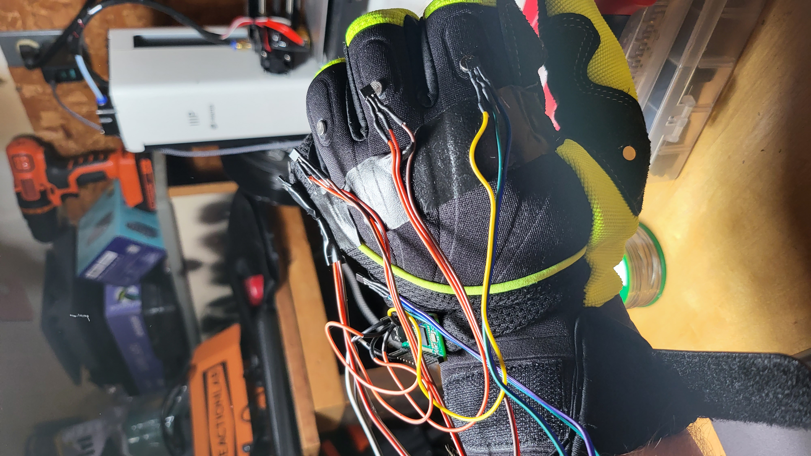

@granitrocky
Projects
Artsey glove
I fell in love with Artsey/Ardux a while back, and I've wanted to figure out how to put one on my hands at all times. Someone in the Inkeys discord had an idea about having all the keys on a straight line instead of on 2 lines, and I thought it could be cool to put that onto 2 gloves and type that way.
The StraEyio gloves were born 
Communities
Artsey/Ardux
About a year ago I was looking into handheld keyboards and I came across Artsey, an 8 key keyboard capable of typing any character. I was intrigued. I ordered a Paintbrush and started learning.
It has been about a year, and my typing speed is roughly where I was with qwerty. 50ish wpm. I was never the fastest typist.
These days I daily drive half of a slightly modified 40 percent keyboard I call the Fatlad (a modified version of the dracuLad keyboard). I've found a wonderful space for others like me who are interested in pushing the boundaries of traditional input devices. We call ourselves Inkeys, short for Inclusive Keyboards, but really we discuss any kind of alternate system.